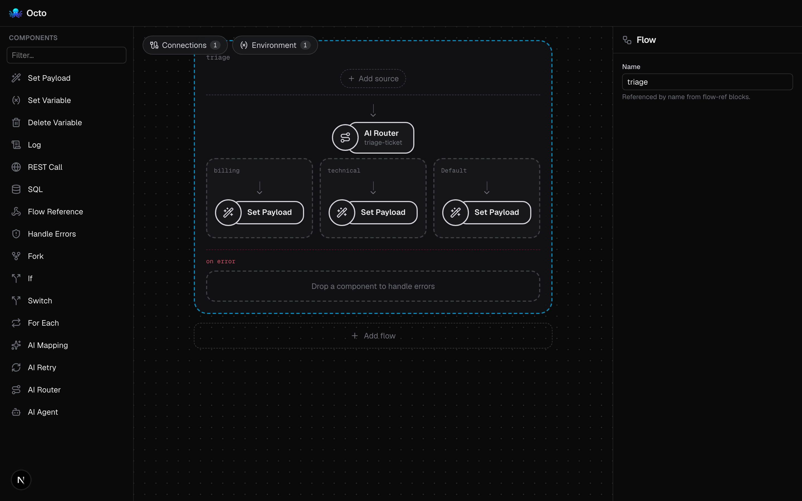
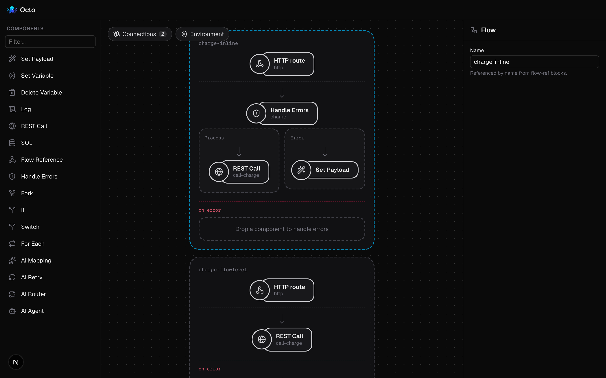

Build enterprise integration flows in a language you already know — then let a modern, concurrent runtime carry them. Cloud-native today, AI-native by design.
After ten years building integration software, I wanted to see how a cloud-native — and later, AI-native — integration platform would really feel. So I dared to dream of a better, modern design that could survive the needs of a new generation of infrastructure.
Structurally it stays familiar: you compose flows in a readable language, and every enterprise integration pattern you rely on is here. But the engine underneath is new — built-in hot reload to make development a joy, flows you can call straight from the CLI to make testing trivial, and a clean concurrency model at its core.
With this simple ESB working, the foundation is set. Now the real adventure begins: making it Kubernetes-native and AI-native.
Everything you need to model real integrations, and nothing that gets in your way.
Declare connectors, flows, and processors in YAML. A flow is an ordered list of blocks — and a flow is itself a processor, so composition is recursive.
Run with --watch and the runtime rebuilds on every config or .env change. Edit a flow, save, watch it take effect — no restart, no ceremony.
invoke runs a single flow by name with JSON in and JSON out — no sources started, no ports bound. Testing a flow is one command.
Each flow runs on a dedicated worker pool reading a bounded channel. Backpressure is built in; FIFO is one setting away (workers: 1).
Routing, transforms, and payloads are CEL expressions, compiled once at build time so a typo fails at startup, not in production.
Every message emits started then exactly one terminal event — completed, dropped, or failed — on a process-wide event bus for metrics and dead-lettering.
A connector turns the outside world into messages; a source feeds them to a flow; the flow runs them through an ordered chain of blocks. That's the whole model — and it composes all the way down.
started event, then exactly one terminal event on the flow-event bus.A service owns the start/stop discipline: connectors acquire resources first, flows build and start, sources begin to emit. On shutdown everything unwinds in strict reverse — channels close, workers drain, connectors release.
A composite block embeds sub-flows through explicit, typed slots. handle-errors is the single-threaded half (an error boundary with recovery); fork is the concurrent half (scatter, then join). Both keep the one-in / one-out seam intact.
handle-errors — try / catch, the recovery path.fork — scatter-gather on the shared pool, joins before returning.That runtime is one process. The platform around it is cloud-native: a control plane — the editor (with OIDC SSO) and the orchestrator, backed by Postgres — and a data plane where every integration you deploy becomes its own Kubernetes Deployment of the very same runtime image. Replicas are pods; a Service gives each a stable in-cluster address; an Ingress makes it public when you ask. See the deployment guide.
Many classic EIPs map onto a block, a composite, or a connector capability that ships today. Every entry below names a construct you can actually write in a flow — nothing aspirational.
| Pattern | In Octo |
|---|---|
| Message | JSON body + vars + correlationID |
| Polling Consumer | cron source |
| Request–Reply | http source (synchronous response) |
| Content-Based Router | switch block |
| Conditional branch | if block |
| Message Translator | set-payload (CEL) · ai-mapping (LLM) |
| Content Enricher | flow-ref (synchronous; result folds back) |
| Splitter | foreach block |
| Scatter-Gather | fork composite |
| Wire Tap | log block (passes the message through) |
| Dead Letter / recovery | handle-errors block · flow error: chain |
| Process Manager | sourceless flow + flow-ref |
| Content-based routing (LLM) | ai-router composite |
http-orders sample, drawn: a wire tap, a one-way audit, content-based routing, and a synchronous content enricher.Every example below ships in the repo under samples/ and runs with zero setup via task run:sample. Pick one and read the YAML.
Beyond the landing tour: reference pages for the pieces you'll reach for most. More to come.
Every connector — cron, http, http-client (with OAuth2), database, logger, the LLM providers — plus the built-in state & cache blocks and their settings.
The key–value store, encrypted secret store, leader election, and distributed cron — and how the object-* and cache blocks persist state across replicas.
The MCP server, its tools and resources, the /mcp endpoint, and per-user API keys — let an AI assistant draft, validate, and run integrations.
The variables in scope, what each source exposes, and copy-paste recipes for routing, transforms, payloads, and error recovery.
The handle-errors block, flow-level error: paths, vars.error, HTTP status codes, and self-healing with ai-retry.
Run locally, in Docker, on k3d, or managed on GCP — plus public vs private exposure, OIDC SSO, TLS, and secrets.
A cron tick logs a greeting every 30 seconds.
Edit the YAML (or a .env), save, and the runtime rebuilds itself.
source:) get an implicit source and become callable by name — ideal for invoke and for flow-ref sub-flows.The 0.1.9–0.1.8 wave made integrations stateful, gave them versioned deployments, and opened the door to authoring with AI assistants over MCP. Here's the tour.
Flows get a key–value store, an encrypted secret store, and leader
election. New built-in blocks build on it: object-read / object-write /
object-delete for state and cache-scope / invalidate-cache
for memoized sub-flows. cron now fires once across replicas.
Tag a version to freeze an integration's definition, deploy that tag, then roll a running deployment from one tag to another in place — id, address, scale and env bindings preserved. You can't delete a tag that's still deployed.
An MCP server at /mcp lets a model read the runtime
schema, study worked examples, validate a draft, create the integration, run it
in a dev runner, and read the logs — gated by per-user API keys you manage from your account.
The http-client connector speaks OAuth 2.0 client-credentials with a token cache in the secret store. The editor adds a collapsible folder tree (drag to reparent, reorder), live-reload of the open file on external writes, and a copy button for the running test URL.

ai-router flow rendered in the visual editor.
error: chain that sees vars.error.The cloud-native ESB, the AI blocks, the Kubernetes-native platform — and now clustering, stateful primitives, versioned deployments, and MCP authoring — are all shipping. Focus turns next to operability and scale.
Versioning and release notes are automated with release-please from Conventional Commits. The current docs build reflects v0.1.9, kept in sync automatically on every release.
Loading the latest changelog from GitHub…